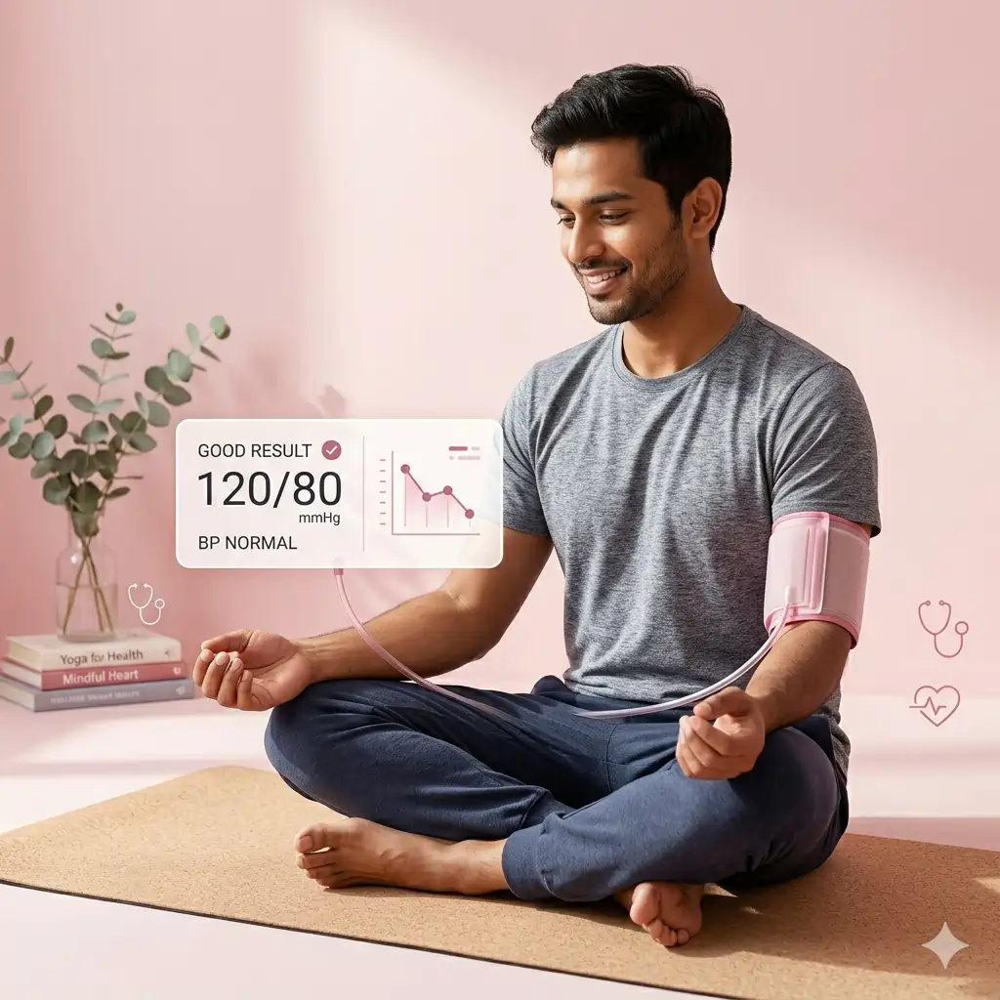
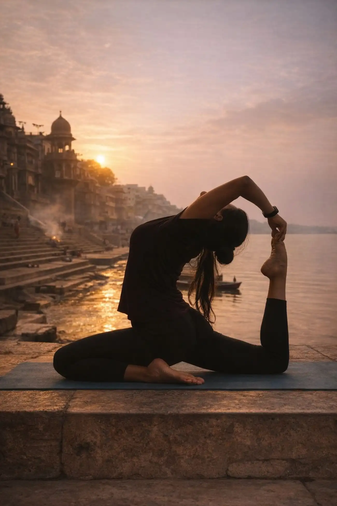

<script type="application/ld+json">
{
  "@context": "https://schema.org",
  "@graph": [
    {
      "@type": "Organization",
      "@id": "https://onlineyogaclass.in/#organization",
      "name": "Shringarika Mishra - Clinical Yoga",
      "url": "https://onlineyogaclass.in",
      "logo": "https://onlineyogaclass.in/images/logo.webp"
    },
    {
      "@type": "Person",
      "@id": "https://onlineyogaclass.in/#shringarika",
      "name": "Shringarika Mishra",
      "jobTitle": "Clinical Yoga Specialist & Research Scholar",
      "image": "https://onlineyogaclass.in/images/shringarika.webp",
      "sameAs": [
        "https://scholar.google.com/citations?user=FAp2CnkAAAAJ",
        "https://www.researchgate.net/profile/Shringarika-Mishra",
        "https://in.linkedin.com/in/shringarika-mishra-400607224"
      ]
    },
    {
      "@type": "BlogPosting",
      "@id": "https://onlineyogaclass.in/blogs/simple-daily-movements-to-keep-your-hands-and-fingers-strong-as-you-age.html#article",
      "isPartOf": {
        "@id": "https://onlineyogaclass.in/blogs/simple-daily-movements-to-keep-your-hands-and-fingers-strong-as-you-age.html"
      },
      "headline": "Simple Daily Movements to Keep Your Hands and Fingers Strong as You Age",
      "description": "Noticing a weak grip, morning finger stiffness, or difficulty opening jars? Discover safe, evidence-based daily movements to preserve hand strength, protect joint mobility, and keep your fingers nimble naturally as you age.",
      "image": "https://onlineyogaclass.in/images/stress.webp",
      "author": {
        "@id": "https://onlineyogaclass.in/#shringarika"
      },
      "publisher": {
        "@id": "https://onlineyogaclass.in/#organization"
      },
      "mainEntityOfPage": "https://onlineyogaclass.in/blogs/simple-daily-movements-to-keep-your-hands-and-fingers-strong-as-you-age.html"
    },
    {
      "@type": "BreadcrumbList",
      "@id": "https://onlineyogaclass.in/blogs/simple-daily-movements-to-keep-your-hands-and-fingers-strong-as-you-age.html#breadcrumb",
      "itemListElement": [
        {
          "@type": "ListItem",
          "position": 1,
          "name": "Home",
          "item": "https://onlineyogaclass.in/"
        },
        {
          "@type": "ListItem",
          "position": 2,
          "name": "Clinical Blogs",
          "item": "https://onlineyogaclass.in/blogs.html"
        },
        {
          "@type": "ListItem",
          "position": 3,
          "name": "Simple Daily Movements to Keep Your Hands and Fingers Strong",
          "item": "https://onlineyogaclass.in/blogs/simple-daily-movements-to-keep-your-hands-and-fingers-strong-as-you-age.html"
        }
      ]
    }
  ]
}
</script>

<main class="relative z-10 max-w-5xl mx-auto px-4 sm:px-6 lg:px-8 pt-32 pb-24">
    <div class="mb-10 max-w-3xl mx-auto rounded-[2.5rem] overflow-hidden bg-slate-50 border border-pink-50 shadow-md">
        
    </div>

    <div class="article-card bg-white border border-gray-100 rounded-[2.5rem] p-8 md:p-12 shadow-sm transition">
        <script type="application/ld+json">
    {
      "@context": "https://schema.org",
      "@type": "BlogPosting",
      "headline": "Simple Daily Movements to Keep Your Hands and Fingers Strong as You Age",
      "description": "Struggling with a weak hand grip or morning finger stiffness? Learn 3 simple, safe dexterity exercises designed for older adults to preserve hand strength and joint mobility.",
      "keywords": "Clinical Yoga Varanasi, BHU Yoga Specialist, hand exercises for seniors, improve grip strength older adults, finger stiffness remedies, elderly dexterity drills, arthritic hand stretches, Shringarika Mishra research",
      "author": {
        "@type": "Person",
        "name": "Shringarika Mishra"
      },
      "publisher": {
        "@type": "Organization",
        "name": "onlineyogaclass.in",
        "logo": {
          "@type": "ImageObject",
          "url": "https://onlineyogaclass.in/images/logo.webp"
        }
      }
    }
    </script>

    <span class="text-pink-600 font-bold text-xs uppercase tracking-widest">Geriatric Rehabilitation &amp; Neuromuscular Kinetics</span>
    <h2 class="text-3xl md:text-4xl font-bold mt-2 mb-6">Simple Daily Movements to Keep Your Hands and Fingers Strong as You Age</h2>
    
    <div class="flex flex-col md:flex-row gap-8 mb-8">
        <div class="md:w-1/3">
            
        </div>
        <div class="md:w-2/3">
            <p class="text-gray-600 text-lg leading-relaxed">
                Think about how many times a day you rely entirely on the strength of your hands. From opening a tightly sealed pickle jar and turning a heavy door handle, to buttoning a favorite shirt or signing a clear signature, your hands are your primary physical tools for independence. Yet, as the years slide by, many older adults notice a slow, frustrating decline in their hand stability and general finger dexterity.
            </p>
            <p class="text-gray-600 text-lg leading-relaxed mt-4">
                At <strong>BHU</strong>, our clinical research into joint preservation reveals that a weak hand grip is often a direct result of tissue stiffness and lazy tendon tracking rather than permanent wear. Restricting your movements out of fear of joint irritation actually speeds up this muscle wasting. This comprehensive guide details three easy, highly managed hand movements you can practice daily from any comfortable seat to keep your fingers nimble and strong.
            </p>
        </div>
    </div>
    
    <div class="full-content text-gray-700 space-y-8 leading-relaxed border-t border-gray-50 pt-8">
        
        <section>
            <h3 class="text-2xl font-bold text-gray-900 mb-3">The Hidden Physiology of Aging Hands</h3>
            <p>
                Your hands are intricate masterpiece networks containing over 27 separate bones, 30 distinct muscles, and an array of stabilizing ligaments. This complex matrix is lubricated by a protective layer known as synovial fluid, which ensures your joints glide seamlessly against one another without grinding.
            </p>
            <p>
                As your baseline biological systems age, your body produces less of this natural lubricant, causing fluids to thicken inside your joints overnight. This lack of fluid circulation leaves your fingers feeling rigid, cold, and clumsy when you wake up. In traditional terminology, this represents an accumulation of cold Vata energy combined with a stagnation of Ama (metabolic debris) inside your joint channels. To break up this stiffness, you must introduce slow, rhythmic joint pumping routines before attempting heavy household chores.
            </p>
        </section>

        <section class="bg-pink-50 p-8 rounded-3xl border-l-8 border-pink-400">
            <h3 class="text-xl font-bold text-pink-800 mb-4">Interesting Fact: The Grip-Strength Longevity Indicator</h3>
            <p class="text-sm italic mb-4">
                Did you know that modern medical science views your personal hand grip strength as a key indicator of your overall biological longevity? A strong, reliable grip means your deeper neuromuscular networks and heart lines are operating with healthy vascular efficiency. Practicing intentional finger resistance drills for just 3 minutes every morning pumps fresh blood straight to your extremities. This quick routine helps thin out thick joint fluids, protects your cartilage from early bone-on-bone friction, and ensures your fine motor control remains completely intact.
            </p>
        </section>

        <section>
            <h3 class="text-2xl font-bold text-gray-900 mb-3">Safeguarding Joint Mobility Without Harsh Strain</h3>
            <p>
                Protecting aging joints requires avoiding sudden or aggressive stretches. Squeezing highly rigid rubber workout balls or forcing stiff fingers into painful shapes can cause minor ligament strains or flare up deep-seated joint inflammation.
            </p>
            <div class="my-6">
                
            </div>
            <p>
                At <strong>onlineyogaclass.in</strong>, our clinical programs focus on using slow, gentle joint movements (Sukshma Vyayama) to maintain safe physical independence. Moving your fingers through structured, low-impact paths allows you to naturally expand your hand range of motion, open up clogged tissue lines, and clear away morning joint aches without over-taxing your delicate bone structures.
            </p>
        </section>

        <section>
            <h3 class="text-2xl font-bold text-gray-900 mb-3">The 3-Minute Daily Hand Strengthening Sequence</h3>
            <p>Sit comfortably up straight in a supportive chair with your feet flat on the floor, and extend your hands out in front of you to begin this routine:</p>
            
            <div class="space-y-6 mt-4">
                <div class="border border-pink-100 p-5 rounded-2xl bg-white shadow-sm">
                    <h4 class="font-bold text-gray-900 mb-2"><i class="fas fa-hand-sparkles text-pink-400 mr-2"></i>1. The Gentle Starburst Finger Spread (Anguli Naman Variation)</h4>
                    <p class="text-sm mb-2"><strong>How to do it:</strong> Bring both hands in front of your chest, palms facing away from you. Inhale slowly as you stretch your fingers and thumbs as wide apart as they can go, spreading them out like a starburst. Hold this open stretch for 3 seconds. Exhale softly as you bring your fingers back together to touch, resting them side-by-edge. Complete 8 slow repetitions.</p>
                    <p class="text-sm"><strong>Why it works:</strong> This movement gently exercises the delicate web muscles between your digits, opening up tight spaces and improving overall flexibility across your hand structure.</p>
                </div>
                
                <div class="border border-pink-100 p-5 rounded-2xl bg-white shadow-sm">
                    <h4 class="font-bold text-gray-900 mb-2"><i class="fas fa-hand-pointer text-pink-400 mr-2"></i>2. The Precision Thumb-to-Finger Press Loop</h4>
                    <p class="text-sm mb-2"><strong>How to do it:</strong> Turn your palms facing up toward the ceiling. Take a steady breath in. As you exhale, touch the tip of your right thumb firmly against the tip of your right index finger, pressing them together to form a clear circle. Squeeze for 2 seconds. Release, and smoothly touch your thumb tip to your middle finger, then your ring finger, and finally your pinky finger. Repeat the entire loop 3 times on each hand.</p>
                    <p class="text-sm"><strong>Why it works:</strong> This targeted exercise strengthens your fine motor control networks, coordinates thumb opposition paths, and makes daily tasks like gripping writing pens or holding cutlery much easier.</p>
                </div>
                
                <div class="border border-pink-100 p-5 rounded-2xl bg-white shadow-sm">
                    <h4 class="font-bold text-gray-900 mb-2"><i class="fas fa-hand-fist text-pink-400 mr-2"></i>3. The Slow-Motion Claw-to-Fist Glide</h4>
                    <p class="text-sm mb-2"><strong>How to do it:</strong> Extend your fingers straight up. Slowly bend only your upper finger joints, drawing your fingertips down to touch the very top base pads of your palms, forming a 'claw' shape. Hold for 2 seconds. From there, continue sliding your fingertips down along your palms, folding your thumbs across them to create a soft, relaxed fist. Hold for 2 seconds, then slowly reverse the path back to a straight hand. Complete 5 loops.</p>
                    <p class="text-sm"><strong>Why it works:</strong> This sliding glide moves your long finger tendons smoothly through their narrow channels, preventing fluid congestion and reducing the risk of developing trigger finger or carpal tunnel tightness.</p>
                </div>
            </div>
        </section>

        <section>
            <h3 class="text-2xl font-bold text-gray-900 mb-3">Why Professional Guidance Secures Your Functional Mobility</h3>
            <p>
                As a <strong>Gold Medalist (University of Patanjali)</strong> and <strong>Research Scholar at BHU</strong>, my ongoing mission is to show older adults how structured lifestyle adjustments can preserve their baseline physical autonomy. Dealing with morning hand stiffness or a fading grip should never mean giving up on your favorite hobbies or relying on others for basic self-care tasks.
            </p>
            <div class="my-6">
                
            </div>
            <p>
                Our elderly care batches at <strong>onlineyogaclass.in</strong> organize movements into safe, highly managed steps, ensuring you build up your mobility in perfect harmony with your structural framework. Dedicating just three minutes each morning to this gentle hand and finger sequence helps you protect your cartilage, maintain your fine motor coordination, and step forward into your daily activities with a safe, confident, and independent grasp.
            </p>
        </section>

        <div class="border-t border-gray-100 pt-8 mt-8">
            <div class="bg-gray-900 text-white p-8 rounded-[2rem] shadow-2xl relative overflow-hidden">
                <div class="flex flex-col md:flex-row items-center gap-8 relative z-10">
                    
                    <div>
                        <h4 class="text-2xl font-bold mb-2">About Shringarika Mishra</h4>
                        <p class="text-sm text-gray-300 leading-relaxed">
                            Gold Medalist (University of Patanjali) &amp; NET JRF (AIR 2). Research Scholar at <strong>Banaras Hindu University (BHU)</strong> specializing in Clinical Yoga and Neuro-Metabolic Health. With 11+ years of experience, she provides evidence-based biological healing through <strong>onlineyogaclass.in</strong>.
                        </p>
                        <div class="flex gap-4 mt-4">
                            <a href="https://www.researchgate.net/profile/Shringarika-Mishra" target="_blank" class="text-xs text-blue-400 font-bold hover:underline"><i class="fab fa-researchgate mr-1"></i> ResearchGate</a>
                            <a href="https://scholar.google.com/citations?user=FAp2CnkAAAAJ&amp;hl=en" target="_blank" class="text-xs text-red-400 font-bold hover:underline"><i class="fab fa-google mr-1"></i> Google Scholar</a>
                        </div>
                    </div>
                </div>
                
                <div class="mt-10 flex flex-col md:flex-row justify-center gap-4">
                    <a href="../../programs/elderly/" class="bg-pink-600 text-white px-10 py-4 rounded-full font-bold hover:bg-pink-700 transition shadow-lg text-center text-lg">
                        Join the Elderly Care &amp; Mobility Batch
                    </a>
                    <a href="https://wa.me/919559827280" class="border-2 border-green-500 text-green-500 px-10 py-4 rounded-full font-bold hover:bg-green-50 transition text-center text-lg">
                        <i class="fab fa-whatsapp mr-2"></i> Free Clinical Consultation
                    </a>
                </div>
            </div>
        </div>

        <p class="text-[10px] text-gray-400 mt-12 text-center leading-relaxed italic">
            <strong>Medical Disclaimer:</strong> The clinical insights and gentle hand movements presented in this article are intended entirely for general educational and mobility support purposes, drawing on physiological pathways analyzed at BHU. This content cannot replace professional medical diagnosis, targeted drug prescriptions, or individual orthopedic care. If you experience severe, unmanageable joint deformity, acute red swelling in your knuckles, or shooting nerve pain down your forearms, please consult an expert physician immediately.
        </p>
    </div>
        
    <div class="mt-12 pt-8 border-t border-slate-100 text-left">
        <h4 class="text-xl font-black text-slate-900 tracking-tight mb-4 flex items-center gap-2">
            <span class="w-1 h-6 bg-pink-500 rounded-full"></span> Read More Clinical Insights
        </h4>
        <ul class="space-y-3 font-semibold text-pink-600 text-sm md:text-base">
            <li>
                <a href="how-putting-your-legs-up-the-wall-helps-your-circulation.html" class="hover:text-pink-700 hover:underline transition flex items-center gap-2">
                    <i class="fas fa-book-open text-xs text-pink-400"></i> How Putting Your Legs Up the Wall Helps Your Circulation
                </a>
            </li>
            <li>
                <a href="a-3-minute-gentle-joint-loosening-routine-for-seniors.html" class="hover:text-pink-700 hover:underline transition flex items-center gap-2">
                    <i class="fas fa-book-open text-xs text-pink-400"></i> A 3-Minute Gentle Joint Loosening Routine for Seniors
                </a>
            </li>
        </ul>
    </div>
    </div>
</main>
